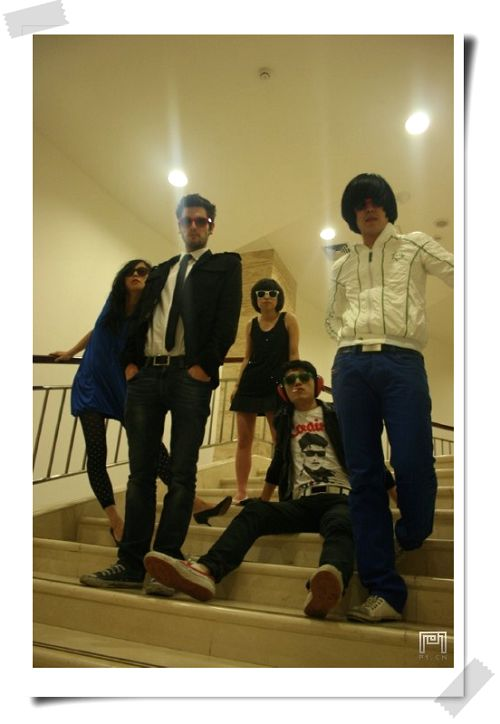

“宠物同谋”乐队九月欧洲巡演 @ Aug 22, 2008
虎子又要去欧洲演出了，真TMD快活！
搞艺术好啊，连工作带玩...全安排喽，钱还不少赚！
上班族的早晨总是痛苦地从床上爬起来，做早饭吃早饭，上班。
别看天天坐椅子上，还是感觉疲惫！
属于自己的时间总是少得可怜，轮到休假，能轻松快活吗？那是需要体力滴~
9.14.-10.13.期间“宠物同谋”这支年轻的电子乐队将在柏林、科隆、巴赛罗娜、赫尔辛基、布达佩斯、及罗马等城市近行长达一个月的巡演，乐队发言人虎子表示：“宠物同谋这次欧洲巡演将是对于我们最重要的一次体验，我希望我们的音乐也可以让欧洲的人们跟着我们跳起来，此次欧洲行也得到了运动品牌安踏的帮助！”乐队将会和安踏合作2009秋季《宠物同谋》系列运动装。9.11.在SONG CLUB里进行一次临行前的演出。
*想听听他们的歌吗？点击这里！
*今年和虎子去看以前的朋友，住在他父母家里，拍了些照片，看看大家的表情，搞艺术的人要么酷要么另类要么颓废要么奔放热情，再瞧瞧我那张曾经与他们一起的面孔，已经被折磨成这个惨样了~
*Thanksgiving & Huzi
*朱岐瞻美术馆演出
2008-9-11 10:00P song club Beijing
2008-9-27 10:00P cologne
2008-10-3 8:00P budapest
2008-10-11 9:00P Barcelona



4 Responses to ““宠物同谋”乐队九月欧洲巡演”
2008-08-22
They have talents, but you don’t have any talents and you getta work. You can enjoy life, don’t be necessary to be a dancer or singer.
2008-08-25
听了一下，比较幼稚的电子音乐~~装样的成分大于对音乐本身的热爱吧
2008-08-26
看来欧洲人喜欢幼稚、装样的音乐风格~
幼稚、装佯..有人买帐也不错呀~
2008-08-26
唉，似乎“欧洲人”三个金光闪耀的大字一出就吓得我等黄皮病夫抱头鼠窜。
欧洲人喜欢不代表我也得喜欢，我不喜欢欧洲人喜欢的不代表我傻B。
欧洲人最近还喜欢玩BiSex呢，我口味还没那么重难道在您眼里我就是一阳痿了？
姐姐，恐惧和崇拜都来自于盲目和无知。
Il faut apprendre tout ce que tu ne sais pas pour toute la vie.ca y est?
Leave A Reply
存档只读，评论已关闭。